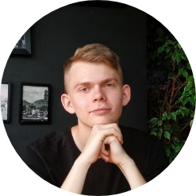

|  | Vadym PolyniakDate of birth: 28/01/2001 Nationality: Ukrainian Gender: Male Phone number: (+380) 982263830 E-mail: lossiatch@gmail.com Adress: Ivana Bohuna St, 4, 58000, Chernivtsi, Ukraine |
CUSTOMER SUPPORT MANAGER – AIESEC IN CHERNIVTSI
03/03/2019 – 03/09/2019 – Chernivtsi, Ukraine
SALES MANAGEMENT TEAM LEADER – AIESEC IN CHERNIVTSI
10/09/2019 – 10/11/2019 – Chernivtsi, Ukraine
MCDONALD'S CREW MEMBER – MCDONALD'S
27/06/2020 – 17/09/2020 – Kaufbeuren, Bavaria, Germany
BACHELOR OF INTERNATIONAL RELATIONS –Yuriy Fedkovych Chernivtsi National University
| Mother tongue(s): | UKRAINIAN | |
| Other language(s): | RUSSIAN | ⭐⭐⭐⭐⭐⭐ |
| ENGLISH | ⭐⭐⭐⭐⭐ | |
| GERMAN | ⭐⭐⭐ | |
| POLISH | ⭐⭐ | |
| SPANISH | ⭐ |